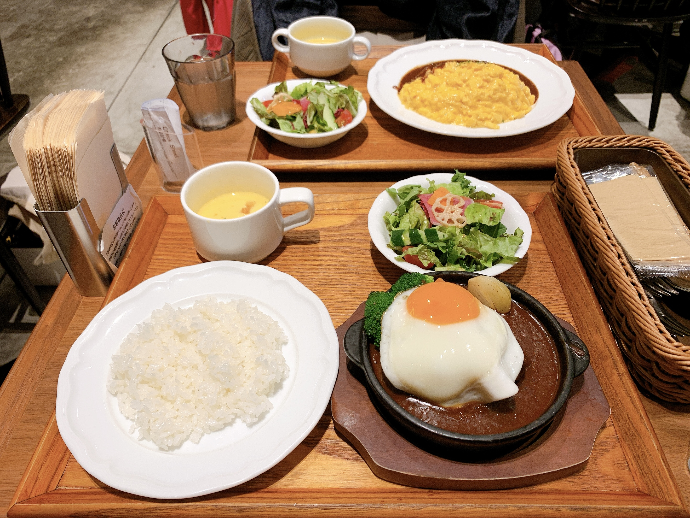

渋谷/代官山周辺のお店
DESSERT
カフェ アクイーユ
- 代官山駅より徒歩5分
- 営業時間 : 11:00-22:00
- 定休日 : 年末年始
- ボリュームたっぷりのインスタ映えするパンケーキが有名なお店。パンケーキが2枚重なったレギュラーサイズは空腹でも完食に一苦労するほど。季節ごとに変わるメニューもおすすめ。ヲタク丸出し見逃してください。
- カフェアクイーユホームページ

果実園リーベル
- 渋谷駅より徒歩1分渋谷ヒカリ6階
- 営業時間 : 11:00-21:00
- 定休日 : 無し
- 目黒、池袋、横浜、立川などにも店舗を構える、新鮮なフルーツをふんだんに使用したスイーツが有名なお店。ケーキ、パフェ、パンケーキ全てフルーツのボリューム満点。フルーツが売りだけど実は栗がめちゃくちゃおいしい！モンブランパフェが比較的安い割に大満足でした。写真がものすごく下手
- 果実園ホームページ
IVY PLACE
- 代官山駅より徒歩6分
- 営業時間 : 8:00-23:00
- 定休日 : 無し
- 朝食やランチからディナーまで楽しめる、カフェ、ダイニング、バーの3つの空間からなるレストラン。緑豊かな自然の中にある開放的な店内は広く、人気店でありながら予約なしでも入れることが多い。素朴な見た目のパンケーキはふわふわでちょうどよいボリューム感。ランチやディナーも是非行ってみたいところです。
- IVY PLACE ホームページ
LUNCH
パーラー大箸
- 渋谷駅より徒歩3分渋谷東急プラザ6階
- 営業時間 : 11:00-22:00
- 定休日 : 無し
- レトロポップな店内で昔ながらの洋食やスイーツが楽しめるお店。人気店のため訪問したランチタイムには行列ができていました。レトロなメニューが豊富で、有名なととのうプリンは硬めで絶品！夜には酒場としても楽しめます。
- パーラー大箸インスタグラム

こめらく
- 渋谷駅より徒歩1分渋谷ヒカリ6階
- 営業時間 : 11:00-22:30
- 定休日 : 無し
- お出汁、お米、具にこだわった贅沢なお茶漬けが楽しめるお店。出汁をかける前と後で二度楽しめるお茶漬けは種類豊富でどれも日本食の温かみが味わえるメニュー。お米好きにはたまりません。
- こめらくホームページ
ホームに戻る